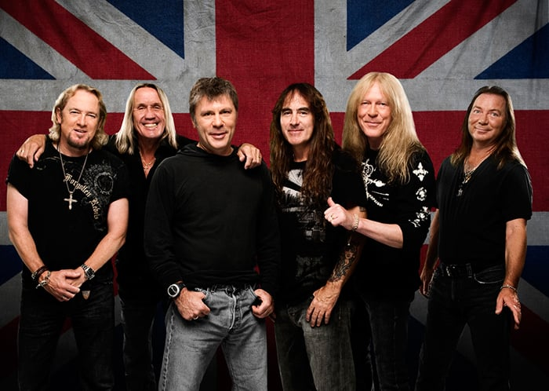
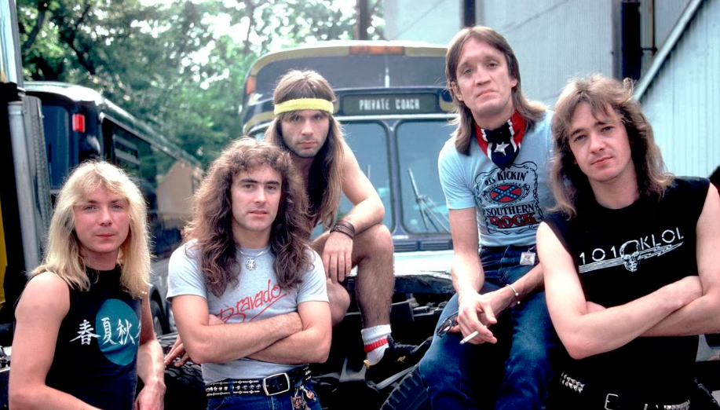

Iron Maiden: Rumores de Mudanças na Formação Geram Preocupações Entre os Fãs
São Paulo, 9 de Agosto de 2023 — A lendária banda de heavy metal Iron Maiden está enfrentando uma onda de especulações e inquietação entre os fãs, à medida que surgem rumores sobre possíveis mudanças na formação da banda, algo que poderia alterar significativamente a dinâmica e o som que os admiradores conhecem há décadas.Os rumores começaram a circular após declarações evasivas de alguns membros da banda durante entrevistas recentes. Enquanto os integrantes não confirmaram oficialmente nenhuma mudança, suas respostas vagas têm deixado espaço para interpretações e teorias sobre o que o futuro reserva para o Iron Maiden.
A preocupação dos fãs aumentou ainda mais quando o vocalista Bruce Dickinson mencionou em uma entrevista que a banda está enfrentando desafios criativos e que mudanças são inevitáveis em algum momento. Essas palavras têm deixado muitos admiradores ansiosos sobre a possibilidade de que membros-chave possam sair da banda, o que poderia resultar em uma mudança significativa na identidade e na sonoridade do Iron Maiden.
Para os fãs que cresceram ouvindo os álbuns clássicos da banda e assistindo a suas energéticas performances ao vivo, a ideia de uma mudança na formação é perturbadora. Iron Maiden sempre foi sinônimo de estabilidade e excelência musical, e a perspectiva de que isso possa estar em risco tem gerado preocupação e incerteza.
No entanto, apesar dos rumores e da ansiedade, é importante notar que o Iron Maiden possui uma base de fãs incrivelmente leal e apaixonada, que continuará a apoiar a banda independentemente das mudanças que possam ocorrer. A influência duradoura da banda na cena do heavy metal é inegável, e seu legado musical continuará a ressoar, independentemente do que o futuro possa trazer.
Enquanto os fãs aguardam por declarações oficiais da banda, os rumores sobre mudanças na formação do Iron Maiden são um lembrete do quão profundamente as relações musicais podem afetar os fãs e como as mudanças em uma banda amada podem gerar uma série de emoções conflitantes.